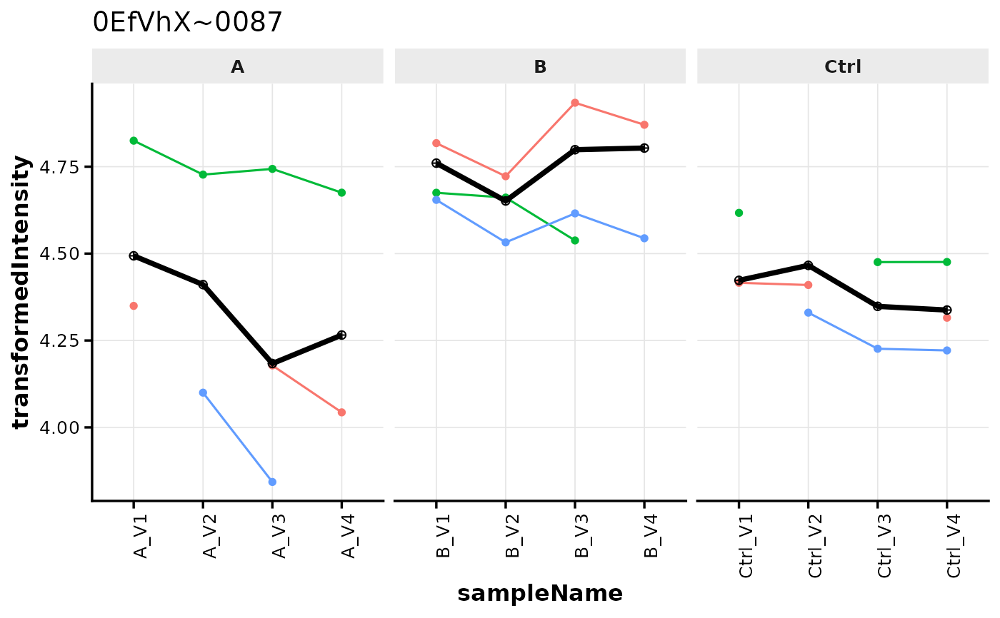

Aggregate peptide intensities by robust linear regression
Source:R/LFQDataAggregator.R
AggregateRlm.RdAggregates peptide intensities to protein level using robust regression (rlm). Works best with variance-stabilized (log-transformed) intensities.
Super class
AggregatorBase -> AggregateRlm
Public fields
controlconvergence controls of
MASS::rlm:maxit(default 20) andacc(default 1e-4, relative change of the IRLS residuals)
Methods
Inherited methods
AggregateRlm$new()
initialize
Usage
AggregateRlm$new(lfq, prefix = "protein", control = list())Arguments
lfqLFQData
prefixdefault protein
controlnamed list merged over the defaults; convergence controls of
MASS::rlm:maxit(default 20) andacc(default 1e-4, relative change of the IRLS residuals)
Examples
istar <- prolfqua::sim_lfq_data_peptide_config()
#> `protein_Id`: columns `proteinID`, `idtype2` united with separator '~'.
#> creating sampleName from file_name column
#> setup_analysis: dropped 6 unconfigured columns: average_prot_abundance, sd, mean, N, avg_peptide_abd, Replicate.
#> setup_analysis: added 36 rows with NA response for feature and sample combinations absent from the input.
data <- istar$data |> dplyr::filter(protein_Id %in% sample(protein_Id, 100))
lfqdata <- LFQData$new(data, istar$config)
lfqTrans <- lfqdata$clone()$get_Transformer()$log2()$robscale()$lfq
#> Transformed response column added: log2_abundance
agg <- AggregateRlm$new(lfqTrans, "protein")
agg$aggregate()
p <- agg$plot()
p$plots[[1]]
